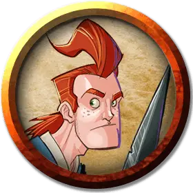

Пендрагон Пчелиное жало
Pendragon Beestinger
Средний Гуманоид (Человек), нейтрально-злой, именной НИП

Класс Доспеха 12 (15 с доспехом мага)
Хиты 27 (5к8 + 5)
Скорость 30 футов
| мод | спас | ||
|---|---|---|---|
| СИЛ | 10 | +0 | +0 |
| ЛОВ | 14 | +2 | +2 |
| ТЕЛ | 12 | +1 | +1 |
| мод | спас | ||
|---|---|---|---|
| ИНТ | 17 | +3 | +3 |
| МДР | 10 | +0 | +0 |
| ХАР | 11 | +0 | +0 |
Навыки Выступление +2, Запугивание +5, Магия +5
Чувства пассивное Восприятие 10
Языки Общий, Драконий, Полуросликов, Эльфийский
Опасность 2 (450 опыта)
Бонус мастерства +2
Особенности
Отголосок заклинания (1/день). Пендрагон может наложить заклинание, которое он наложил в свой последний ход, время наложение которого становится "1 бонусное действие". Это бонусное заклинание использует ячейку заклинаний, как обычно.
Использование заклинаний. Пендрагон является заклинателем 4-го уровня. Базовой характеристикой Пендрагона является Интеллект (Сл спасброска от заклинания 13, +5 к попаданию атаками заклинаниями). У него подготовлены следующие заклинания волшебника:
• Заговоры (неограниченно): брызги кислоты [acid splash], свет [light], волшебная рука [mage hand], ядовитые брызги [poison spray], электрошок [shocking grasp];
• 1 уровень (4 ячейки): обнаружение магии [detect magic], доспехи мага [mage armor], волшебная стрела [magic missile], усыпление [sleep];
• 2 уровень (3 ячейки): глухота/слепота [blindness/deafness], облако кинжалов [cloud of daggers], палящий луч [scorching ray].
Действия
Короткий меч. . Рукопашная атака оружием: +4 к попаданию, досягаемость 5 футов, одна цель. Попадание: 5 (1к6 + 2) колющего урона.
Описание
Способный волшебник Пендрагон Пчелиное жало занял место картографа команды "Б" после того, как Брахма Лутьер покинул группу. На самом деле, его первым заданием было помочь команде в попытках задержать странствующего барда. Приемный ребенок Рози Пчелиное жало из команды "С", Пендрагон является противником своей матери почти во всех отношениях, включая его цель - желание привлечь внимание к некоторым криминальным интересам семьи, о которых ходят слухи. Пендрагон, на самом деле, пытался убить свою мать - и был сам убит в процессе. Несмотря на то, что он был воскрешен по просьбе Рози, отношения между ними остаются прохладными.
Пендрагона выгнали из магической школы в результате темных слухов, ходивших по клану Пчелиное жало. Теперь маг-самоучка, он специализируется на использовании опасных заклинаний и странных безделушек, с которыми он часто сталкивается в своей роли своего рода тайного археолога. Стремление к чувству семьи, которое дает группа искателей приключений, удерживает его в команде "Б", даже если, к сожалению, это связано с тем, что Дуб Меткобьющий является своего рода отцовской фигурой.